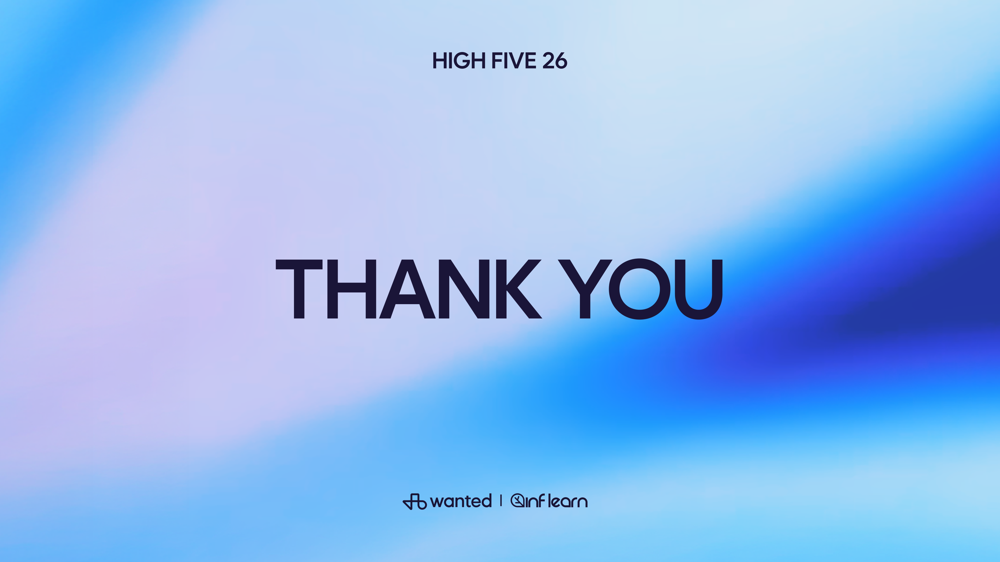

방법을 핏하게,
바이브 코딩으로 여는
'HRD 메이커' 시대
02
03
04
05
06
왜 HRD는 메이커가 되어야 하는가
바이브 코딩이란 무엇인가
실제 사례 — HRD가 직접 만든 것들
개인 실험에서 팀의 방식으로
지금의 도구가 사라져도 남는 것
만들고 싶었지만,
만들 수 없었던 시간들
인재육성 업무를 하면서 교육 몰입도 향상, 임직원 역량 개발,
조직 활성화를 위해 다양한 앱과 웹 서비스에 늘 관심이 있었습니다.
시장에 있는 도구를 써보고, 새로운 업무 시도도 해보지만...
"담당자로서 현재 필요하고 딱 맞는 도구는
없는 경우가 많았습니다."
내부 시스템 연동 허들
수개월 소요, 수백만 원 이상
우선순위에서 밀림
대기만 하다가 흐지부지됨
원하는 대로 나오지 않고
수정 요청하기도 눈치 보임
어떤 방법을 써도 — 오래 걸리고, 비용이 들고, 내 생각대로 나오지 않았습니다.
(귀여운 동물 표지지만 내용과 양은...)"

매번 'Hello World'에서 멈추던 과거...
할 만하겠는데!?"
🌿 문제 상황
- 맥북을 처음 써보는데 키 배열도 다르고 단축키를 몰라서 생산성 급감 😭
- 구글링해도 마음에 드는 한눈에 보기 좋은 이미지가 없었다.
🛠 해결 과정
- "그럼 만들어볼까?"라는 가벼운 마음으로 시작
- AI 검색기에 "바탕화면 단축키 맵" 요청 → 한계 봉착 (일관성 부족 등)
- 바이브 코딩으로 나만의 웹앱 개발 돌입
기본 이미지 → 사용자 맞춤형 앱으로 확장
단순히 보는 걸 넘어,
쓰는 사람 기준으로 최적화된 도구를
직접 만들 수 있다는 자신감
생각보다 빠르고 쉽게 만들어지면서 도파민이 터졌습니다. 🎉
"만들었다"는 성공의 경험이 직무의 몰입을 끌어올렸고,
이 감각이 HRD 업무 문제 해결에 똑같이 적용될 수 있다는 확신으로 이어졌습니다.
- 😔 내부 개발자 의뢰 → 대기 → 우선순위 밀림
- 😔 외주 업체 → 비용 견적 → 기간 협의
- 😔 지인 도움 → 눈치 보임 → 원하는 대로 안 나옴
- 😔 결국 엑셀/PPT로 타협
- 🔥 아이디어 → AI와 대화 → 바로 개발
- 🔥 마음에 안 들면? 다시 말하면 됨
- 🔥 내 생각이 코드를 거치지 않고 그대로 구현
- 🔥 언제든지 수정, 배포, 동료에게 공유
💊 "만들었다"는 작은 도파민이 자기주도적 문제해결을 이끕니다.
그렇다면 HRD 담당자가 왜 직접 이 방식으로 만들어야 하는가?
왜 HRD는
메이커가 되어야 하는가
바쁜 팀장님들에게 필수 자격 취득 과정을 안내해야 했습니다.
안내사항 텍스트가 너무 많아 일부는 놓치고,
준비 없이 응시했다가 탈락하는 사태가 계속 발생했습니다.
문제는 공지의 '양'이 아니라,
체감 가능한 경험의 부재였습니다.
현업은 긴 설명서보다 직접 해보며 이해하는 시뮬레이션 방식에 가장 빠르고 확실하게 반응합니다.
전통적 운영자 (Operator)
"범용 콘텐츠를 고르고, 긴 과정을 운영하고, 외부 공급자나 자체 개발팀에게 모든 것을 의뢰한다."
✔️ 긴 강의 중심의 설계
✔️ 우리 회사의 맥락 부족
메이커형 설계자 (Maker)
"현장의 진짜 문제를 발견하고, 우리 조직 맥락에 100% 맞는 학습 도구와 경험을 직접 만든다."
🔥 핸즈온(Hands-on) 경험 제공
🔥 극강의 속도: 빠른 제작과 무한 개선
HRD 메이커란,
개인과 조직의 역량 성장을 위해
우리 회사의 맥락에 맞는 학습 경험과 체측화 도구를
직접 설계·제작·개선하는 사람이다.
"이제 경쟁력은 더 좋은 과정을 고르는 데서 끝나지 않습니다."
우리 조직이 지금 필요로 하는 경험을
얼마나 빠르고 맥락 있게 만들 수 있는가가 중요해집니다.
바이브 코딩이란
무엇인가
- HRD는 이미 문제를 관찰하고 학습 흐름을 설계하며 현장 반응을 해석하는 일을 해왔습니다.
- 바이브 코딩은 그 아이디어를 앱·웹·시뮬레이션으로 빠르게 바꾸는 실행 수단입니다.
- 개발자가 되자는 이야기가 아닙니다. 문제 해결의 마지막 단계를 외주에만 맡기지 말자는 이야기입니다.
교육의 효과성은 핏(Fit)한 콘텐츠와 방법론에서 나옵니다.
그것을 직접 만들 수 있는 시대가 지금 왔습니다.
HRD 담당자가 메이커가 되는 것. 그게 오늘 제가 드리고 싶은 이야기입니다.
실제 사례 —
HRD가 직접 만든 것들
"서류 점검 ➔ 모의고사 ➔ 스파링"
"개인 진단을 넘어 조직의 대화 도구로"
"제도 수용성을 높이는 체감형 도구"

자격 취득 선결조건인 코칭 로그와
과제 기준을 업로드 즉시 확인합니다.
시험 환경과 유사한 문제 풀이로
부족한 지점을 스스로 자각합니다.
문제 (Before)
- KAC 자격 취득은 시험 전 서류 기준 충족이 필수
- 코치와 담당자가 수십 건을 수작업으로 점검
- 휴먼에러, 반복 안내, 누락으로 인한 응시자 탈락 발생
해결 (After)
- 서류 점검: 업로드 즉시 기준 충족 여부 자동 판별 (AI)
- 모의고사: 실제 시험 유사 환경에서 반복 연습
- "먼저 서류 기준을 잡고, 이후 시험 준비도를 높이는 2단계 설계"
리더들은 팀원의 성향과 방식에 궁금증이 많지만, 외부 진단 시스템은 고가이며 조직의 맥락을 충분히 담지 못합니다.
내부 시스템을 바이브 코딩으로 자체 제작했습니다.
단순한 결과 도출을 넘어, "동료/상사의 결과를 바탕으로 같이 일하는 방식에 대한 대화를 여는 것"에 집중했습니다.
"개인 진단을 조직 대화로 바꾸다"
인사 제도는 개편되었지만 신규 전산 시스템은 미구현 상태입니다. 말로 설명하면 추상적이고, 엑셀/표로 보여주면 임원들의 몰입도가 떨어졌습니다.
UI 레이아웃과 핵심 고려 요소를 바탕으로 시뮬레이터를 제작했습니다. 워크숍 현장에서 임원들이 직접 핸즈온(Hands-on)하며 기준을 공유합니다.
교육용 자료 제작을 넘어, 조직의 변화관리 도구(Change Management)로 확장.
"신입사원에게 당장 더 필요한 것은?"
📱 아래 URL(또는 QR)을 찍고 의견을 제출해주세요!
💡 부서별 인식 갭을 자연스럽게 대화로 이끄는 이 도구 역시 바이브 코딩으로 1시간 만에 만들었습니다.
어떻게 만들었나:
프로세스와 도구
기존의 선형적 프로세스 (Waterfall)
바이브 코딩 최적화 루프
사람처럼 대화하며
기능 요구사항을 물어보고
전체 로직을 설계받습니다.
에디터에 AI가 내장되어 있어
대화 내용이 곧바로
실제 코드로 적용/수정됩니다.
서버 설정 없이 가입만 하면
모바일/웹에서 접속 가능한
나만의 URL을 1분 만에 줍니다.
개인 실험에서
팀의 방식으로
"저는 문과라서요..."
"제 PC에는 파이썬도 안 깔려 있는데요..."
우리가 두려워했던 것은 코딩(논리 구조)이 아니라
타이핑(구문 규칙, 에러 디버깅)이었습니다.
이제 타이핑은 AI가 합니다.
우리는 ‘무엇을, 왜 만들 것인지(설계)’만 고민하면 됩니다.
지금의 도구가 사라져도
남는 것
수많은 AI 코딩 툴이 등장하고 또 사라질 것입니다.
하지만 바이브 코딩을 통해 체득한
"우리 조직의 문제를 내가 직접 풀어낼 수 있다"는 감각은
결코 사라지지 않습니다.
조직의 학습과 성장 속도는 전에 없던 Vibe를 타게 될 것입니다.
사실, 이 프레젠테이션도
사실, 이 프레젠테이션도
바이브 코딩으로 만들었습니다.
PowerPoint 파일이 아닙니다. 살아있는 웹앱(Web App)입니다.
디자인 시스템, 인터랙티브 밸런스 게임, 네비게이션 구조, 다크모드 대응 등
이 모든 과정에서 저는 코드 한 줄 직접 쓰지 않았습니다.
질문하고, 피드백하고, 선택했을 뿐입니다.